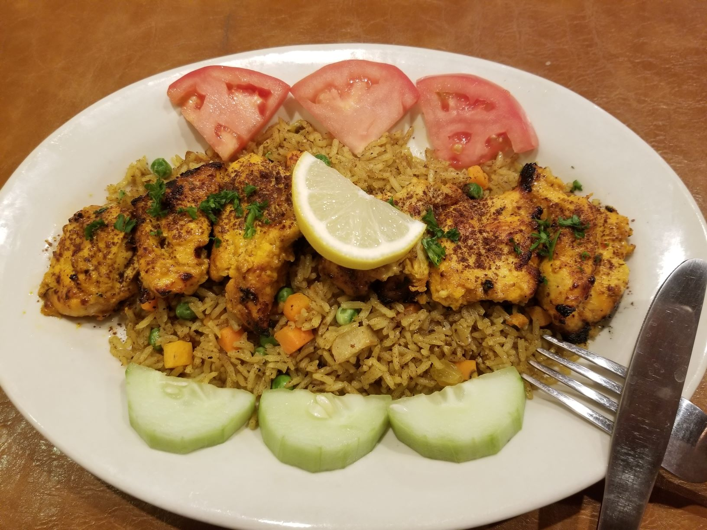

Welcome to Babanis!
Your second home for fresh exotic foods that will leave your pallete craving more.
You don't have to be family to be treated like family.
A local, family-owned Restaurant.
Here at Babani's, we create fresh, traditional Kuridish dishes that will make a person feel like they
are back in the homeland. We create a one of-a kind dining experience by combining our family friendly,
homestyle experience with delicious Kurdish style comfort food. Come in for the flavorful, and mouthwatering
dishes; come back for the one of a kind, family oriented style service and homey atmosphere.
Because when you're here at Babani's . . you are our family.